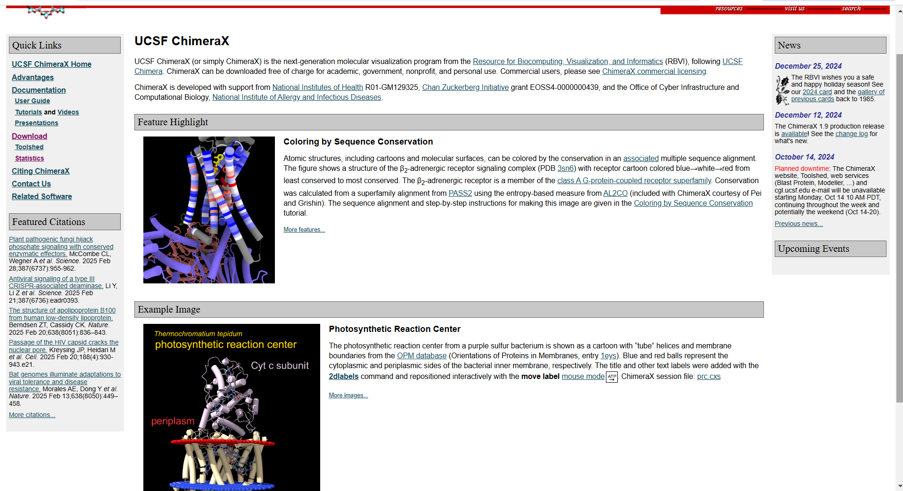

UCSF Chimera is een geavanceerd softwarepakket voor de visualisatie en analyse van moleculaire
structuren en bijbehorende data. Het is ontwikkeld door de University of California, San Francisco (UCSF)
en wordt veel gebruikt in de bio-informatica, structurele biologie, scheikunde en farmaceutisch onderzoek.
